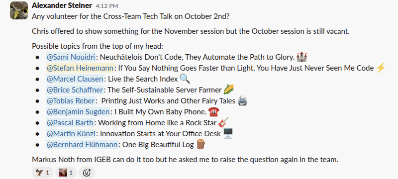
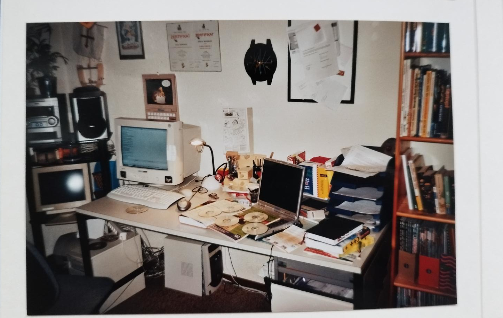
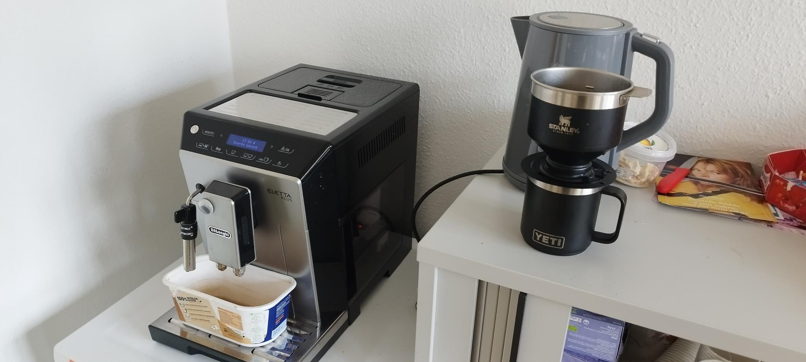
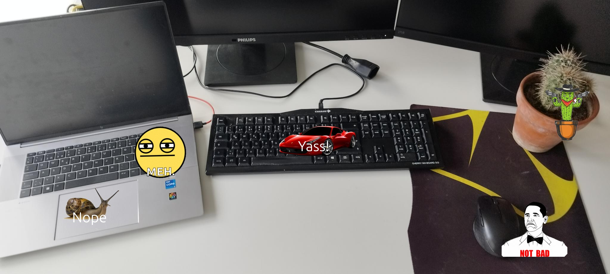

[Presentation title goes here]


How to keep your thoughts
orwork optimization for the impatient



Disclaimer

Disclaimer 2: some stuff is real hacky
Disclaimer 3: some stuff is a bit linux heavy
Disclaimer 4: I thought I had more material
Disclaimer 5: No animals were harmed and no AI was used in the making of this presentation
Slow Down!

Typing




Desktop

Examples:
Resizing
(gsettings set org.gnome.desktop.wm.preferences
resize-with-right-button true)
windows key + middle mouse
windows key
Instant terminal
gsettings org.gnome.settings-daemon.plugins.media-keys terminal
<Super>Return
Desktop switching
gsettings
org.gnome.desktop.wm.keybindings.switch-to-workspace-1
<Super>1
Further ideas:
Code <-> Browser switcher
Open localhost in dev browser
VScode
Peacock
Highlights
Snippets
Custom Keystrokes
Open terminal where the file is
Resize terminal
Show file in explorer
Resize current window
Release notes
Shell
https://evanhahn.com/scripts-i-wrote-that-i-use-all-the-time/